Wawasan & Panduan Pengadaan Resmi
Solusi praktis efisiensi anggaran, tips memilih inventaris sekolah/kantor, dan prosedur administrasi SPJ & Faktur Pajak
Pusat Panduan B2B: Kumpulan artikel ini menyajikan panduan praktis penyusunan RAB pengadaan, komparasi perangkat digital (Smart Board vs Proyektor), tips memilih furnitur kerja ergonomis, hingga administrasi pelaporan SPJ dan Faktur Pajak PPN 11% untuk instansi pemerintah, BUMN, sekolah, dan perusahaan di Malang Raya.

Elektronik Logistik
5 Sep 2026 (08.00)
Panduan memilih printer barcode label kantor dan gudang logistik. Bandingkan teknologi Direct Thermal vs Thermal Transfer, resolusi DPI, dan konektivitas.
Baca Selengkapnya
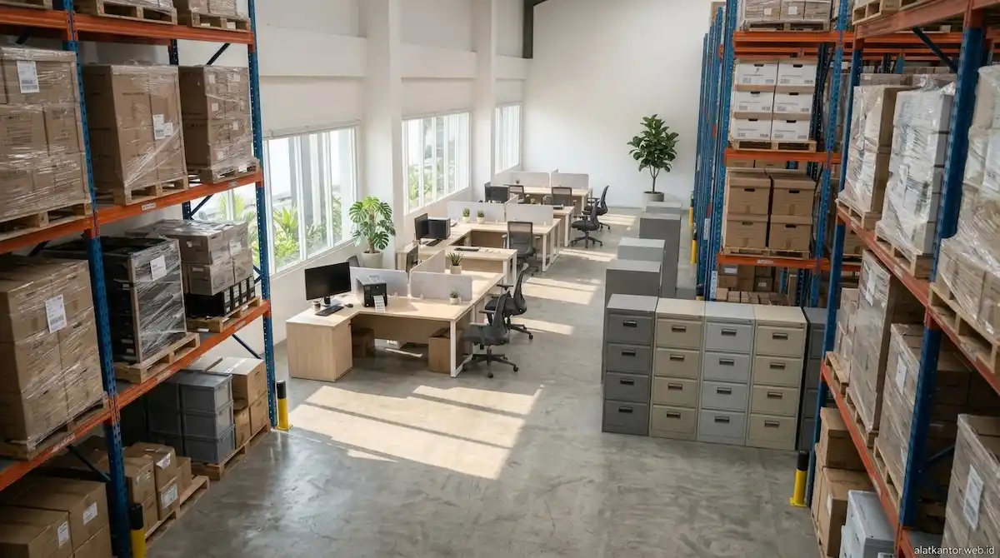
Desain & Furnitur
5 Sep 2026 (12.00)
Panduan tata letak layout furnitur kantor minimalis. Pelajari konsep open-plan vs partisi modular, penataan pencahayaan alami, dan sirkulasi ruang kerja.
Baca Selengkapnya
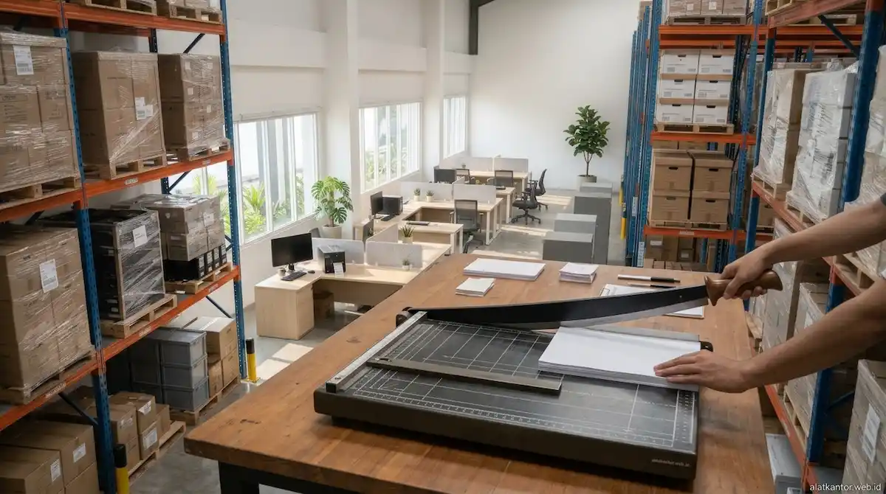
Peralatan Kearsipan
5 Sep 2026 (15.00)
Panduan memilih mesin pemotong kertas paper cutter kantor. Bandingkan jenis Guillotine vs Trimmer rotary, kapasitas potong rim, dan fitur pengaman pisau.
Baca Selengkapnya

Elektronik Kantor
4 Sep 2026
Panduan memilih mesin absensi karyawan kantor. Bandingkan kelebihan mesin absensi fingerprint vs face recognition, fitur enkripsi data, dan koneksi cloud.
Baca Selengkapnya
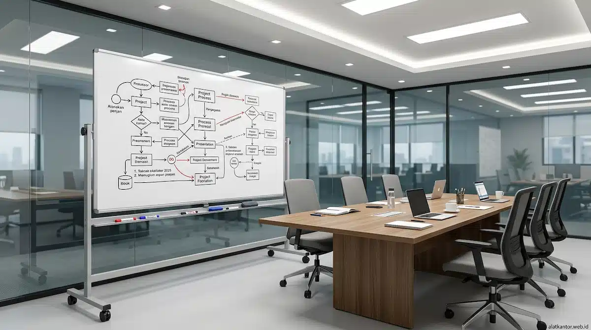
Alat Tulis Kantor
4 Sep 2026
Panduan memilih papan tulis whiteboard kantor terbaik. Bandingkan bahan formika vs element steel magnetik, tipe gantung vs roda stand berbalik.
Baca Selengkapnya

Manajemen B2B
4 Sep 2026
Panduan efisiensi pengadaan Alat Tulis Kantor (ATK) B2B perusahaan. Pelajari sistem kontrol stok inventaris, kontrak vendor grosir, dan audit konsumsi operasional.
Baca Selengkapnya
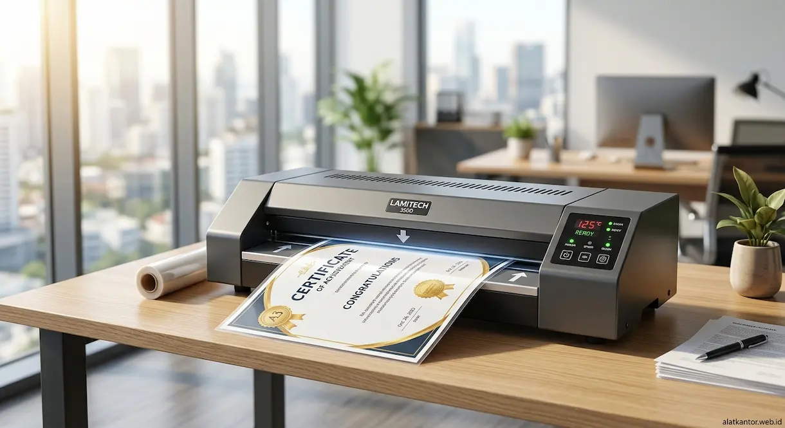
Peralatan Kearsipan
3 Sep 2026
Panduan Memilih Mesin Laminating Dokumen Kantor Terbaik 2026
Panduan lengkap memilih mesin laminating dokumen kantor. Pelajari perbedaan sistem pemanas hot vs cold, ukuran A3 vs A4, dan pencegahan kertas macet.
Baca Selengkapnya
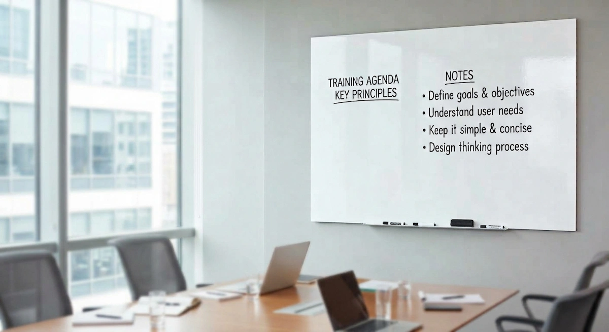
Perlengkapan Presentasi
3 Sep 2026
Tips Memilih Papan Tulis Whiteboard Berkualitas untuk Kantor & Sekolah
Panduan memilih papan tulis whiteboard magnetik vs non-magnetik, lapisan formika impor, lis aluminium, dan tipe gantung vs stand roda.
Baca Selengkapnya
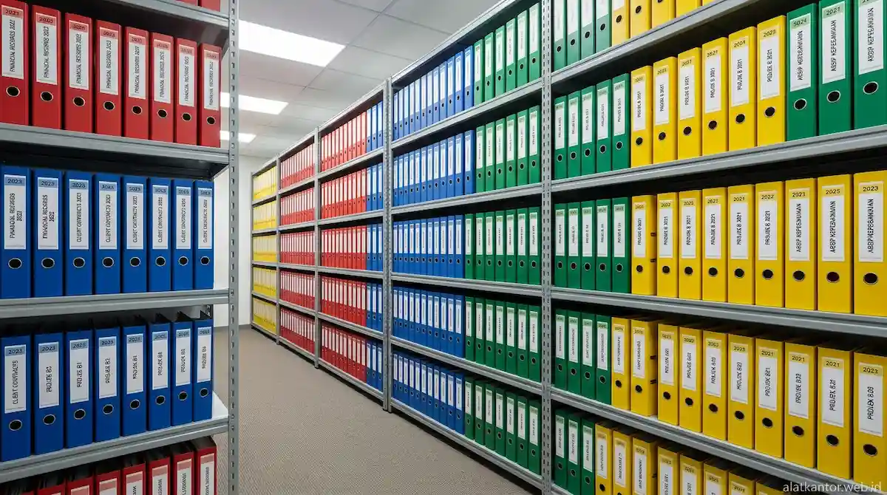
Manajemen Kearsipan
3 Sep 2026
Strategi Manajemen Kearsipan Fisik Kantor Modern Bebas Semrawut
Panduan strategi tata kelola kearsipan fisik kantor. Pelajari penggunaan ordner bantex, kode warna map file, serta filing cabinet besi.
Baca Selengkapnya
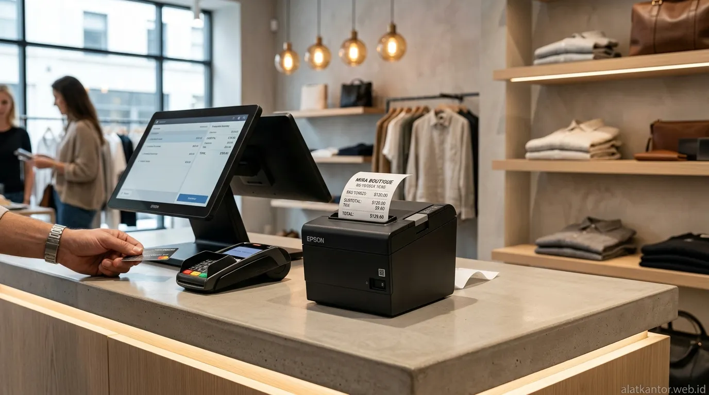
Perangkat POS & Kasir
2 Agt 2026
Panduan Memilih Printer Kasir Thermal Terbaik untuk Bisnis Retail 2026
Panduan lengkap memilih printer kasir thermal untuk bisnis retail, minimarket, dan kafe dengan keunggulan 58mm vs 80mm.
Baca Selengkapnya
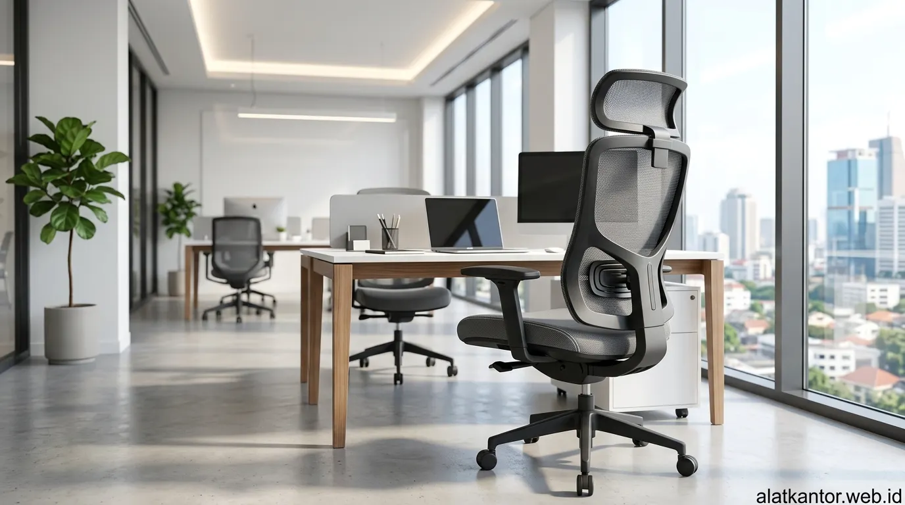
Furnitur Ergonomis
2 Agt 2026
Pentingnya Ergonomi Kursi Kantor untuk Kesehatan & Produktivitas Karyawan
Ketahui manfaat kesehatan penerapan kursi kantor ergonomis berfitur lumbar support untuk mencegah nyeri punggung.
Baca Selengkapnya
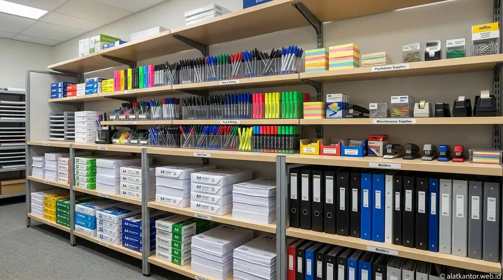
Manajemen Inventaris ATK
2 Agt 2026
Panduan Estimasi Anggaran Pengadaan Alat Tulis Kantor (ATK) Bulanan
Panduan efisiensi dan estimasi anggaran pengadaan Alat Tulis Kantor (ATK) bulanan serta tips kontrol pembelian grosir.
Baca Selengkapnya
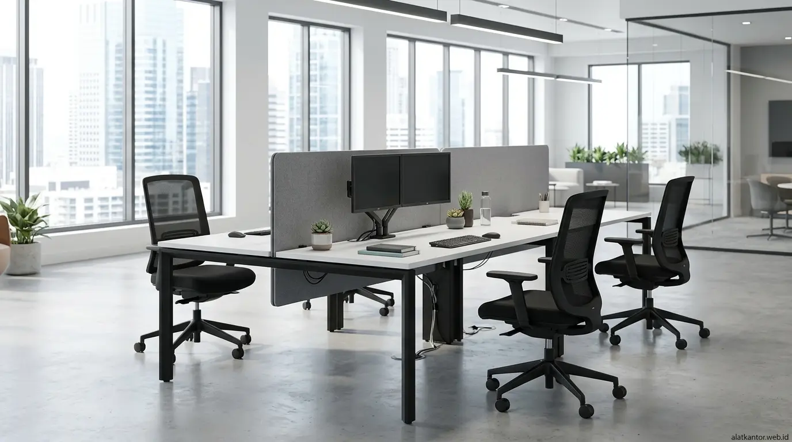
Furnitur Workstation
1 Sep 2026
Panduan Memilih Meja Kantor Partisi Workstation Modular
Tips menata ruang kantor open-plan modern agar hemat tempat, rapi dari kabel menjuntai, dan menjaga privasi fokus kerja staf.
Baca Selengkapnya
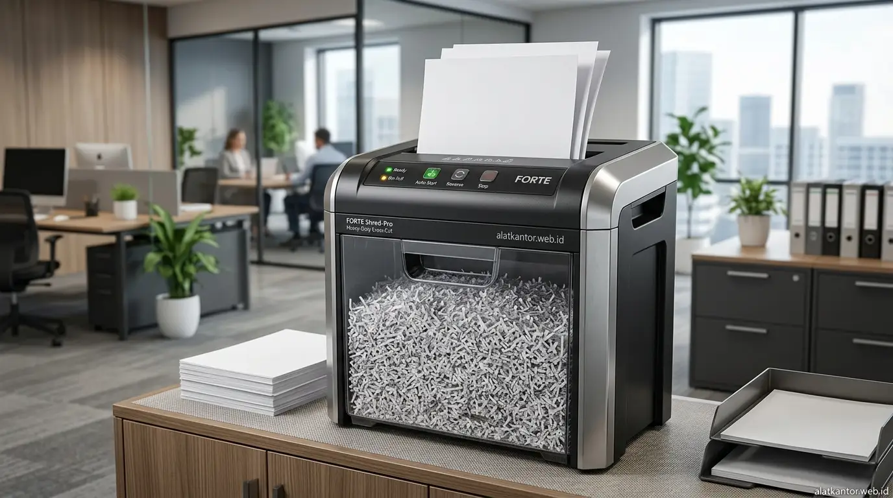
Keamanan Data
1 Sep 2026
Panduan Memilih Mesin Penghancur Kertas (Paper Shredder) Kantor
Panduan praktis melindungi kerahasiaan draf keuangan, data nasabah, dan dokumen internal dari kebocoran data informasi.
Baca Selengkapnya
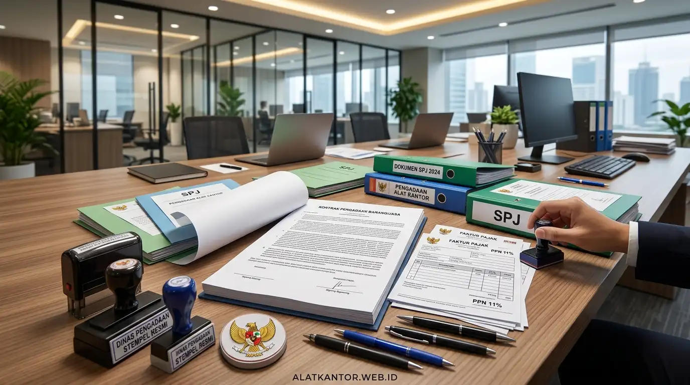
Pengadaan B2B & B2G
1 Sep 2026
Panduan Pengadaan Paket ATK B2B & B2G: Kelengkapan SPK hingga SPJ
Panduan praktis bagi PPK dan Tim Procurement dalam mengelola dokumen pengadaan ATK, e-Faktur PPN 11%, BAST, dan SPJ.
Baca Selengkapnya
Teknologi Kantor
31 Agt 2026
Panduan Pengadaan Smart Board Interaktif untuk Sekolah & Kantor 2026
Panduan teknis dan praktis memilih papan tulis interaktif (Interactive Flat Panel) berstandar TKDN untuk efisiensi rapat direksi serta modernisasi ruang kelas.
Baca Selengkapnya
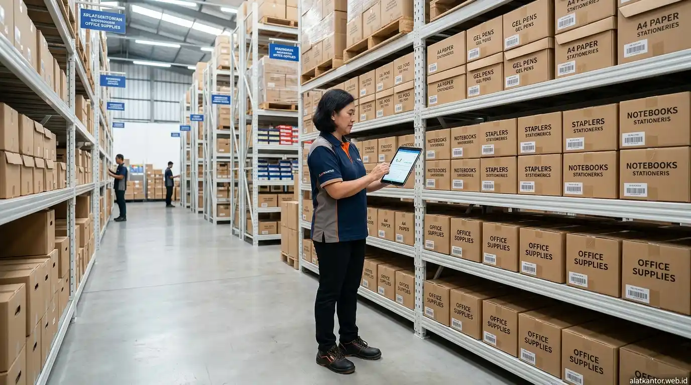
Logistik ATK
31 Agt 2026
Tips Manajemen Stok ATK Grosir Efisien untuk Perusahaan Skala Besar
Panduan praktis mengontrol persediaan Alat Tulis Kantor (ATK) guna menekan pembengkakan biaya operasional korporasi hingga 25% setiap kuartal.
Baca Selengkapnya
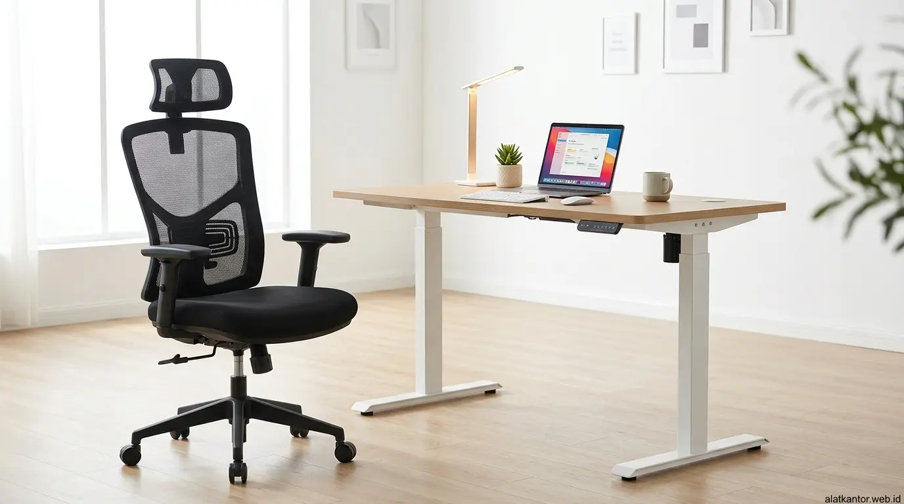
Furnitur Ergonomi
31 Agt 2026
Kriteria Memilih Kursi Kerja Ergonomis untuk Kesehatan Staf Kantor
Dampak posisi duduk terhadap fokus kerja karyawan dan panduan memilih kursi kantor berfitur ergonomis sesuai standar kesehatan kerja K3.
Baca Selengkapnya

Keamanan HRD
29 Agt 2026
Keunggulan Mesin Absensi Fingerprint & Access Control Kantor
Panduan memilih sistem absensi biometrik dan pengunci pintu otomatis untuk meningkatkan kedisiplinan serta keamanan kantor di Malang.
Baca Selengkapnya

Perawatan Layar
29 Agt 2026
Panduan Merawat Smart Board Interaktif & Layar IFP Sekolah
Tips praktis merawat permukaan kaca anti-glare, sensor sentuh infrared, dan sistem pendingin Smart Board agar tidak cepat rusak.
Baca Selengkapnya

Pengadaan B2G
29 Agt 2026
Cara Efisien Pengadaan ATK Kantor Pemerintah & Kelengkapan SPJ
Panduan pengadaan Barang Habis Pakai dinas, kelengkapan berkas SPJ, BAST, dan Faktur Pajak PPN 11% resmi distributor Malang Raya.
Baca Selengkapnya

Kearsipan & Keamanan
28 Agt 2026
Rekomendasi Filling Cabinet Besi 4 Laci Dokumen Rahasia
Panduan memilih filling cabinet besi 4 laci anti rayap, tahan api, plat 0.7 mm, dan kuncian sentral untuk arsip penting di Malang Raya.
Baca Selengkapnya

Smart Class
28 Agt 2026
Panduan Memilih Interactive Flat Panel (IFP) Smart Board
Kriteria memilih layar sentuh 4K interaktif 65, 75, dan 86 inch ber-OS ganda untuk kelas digital modern dan ruang rapat executive.
Baca Selengkapnya

Furnitur Sekolah
28 Agt 2026
Tips Memilih Meja Sekolah Dua Kursi Rangka Besi Tahan Lama
Tips memilih perabotan meja siswa dua kursi berangka besi tebal 1.2 mm dan papan multiplex HPL anti-goyol untuk sekolah di Malang.
Baca Selengkapnya
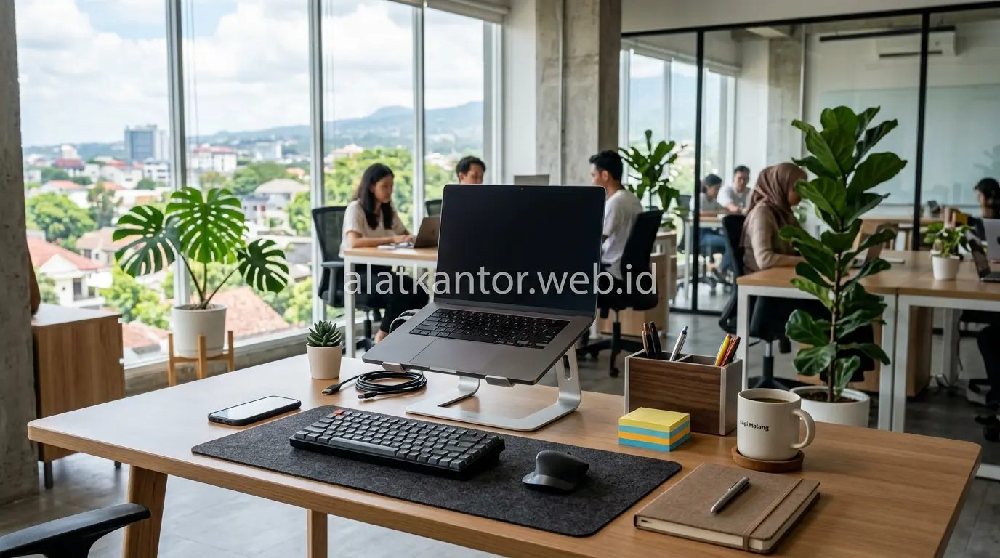
Pillar Utama
27 Agt 2026
7 Peralatan Kantor Wajib untuk Produktivitas Tim & Efisiensi Operasional
7 peralatan kantor vital untuk mendongkrak efisiensi dan kenyamanan kerja tim instansi serta perusahaan di Malang Raya.
Baca Panduan Utama
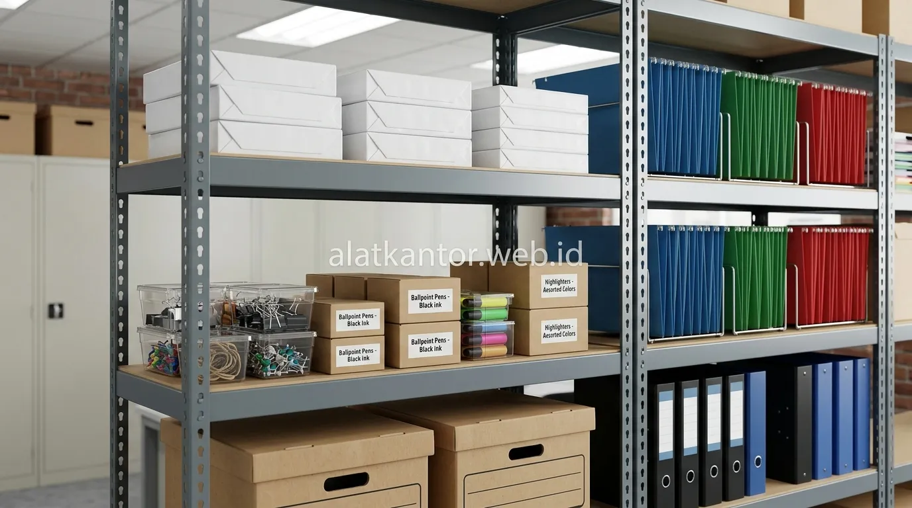
Manajemen ATK
27 Agt 2026
Checklist ATK Bulanan Perusahaan & Sekolah Bebas Pusing SPJ
Panduan praktis daftar kebutuhan ATK rutin bulanan agar operasional kantor dan sekolah di Malang berjalan lancar tanpa terkendala stok.
Baca Selengkapnya
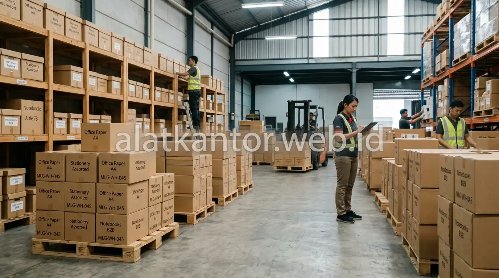
Efisiensi Anggaran
27 Agt 2026
Cara Menghemat Pengeluaran ATK Kantor Hingga 30% dengan Pembelian Grosir
Strategi finansial mengendalikan pengeluaran barang habis pakai dan ATK perkantoran di Malang tanpa mengurangi efisiensi staf.
Baca Selengkapnya
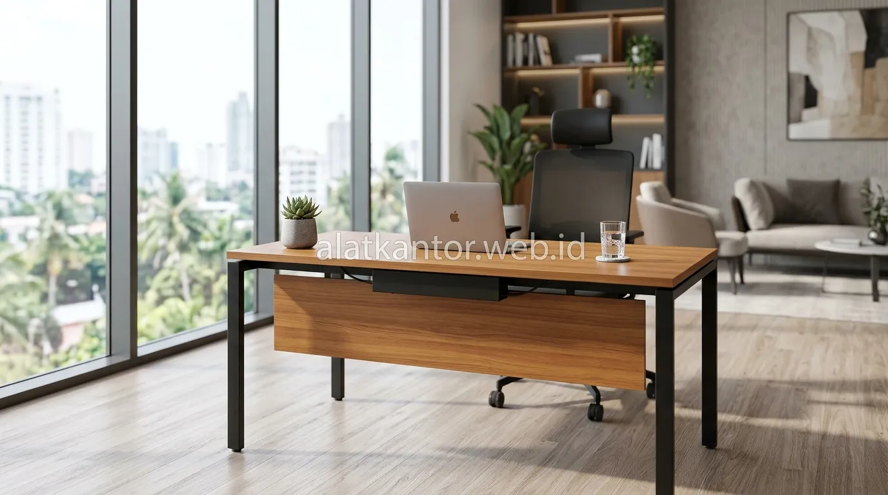
Material Furnitur
26 Agt 2026
Panduan Pemilihan Meja Kerja & Meja Rapat HPL Malang Raya
Panduan lengkap memilih meja kerja dan meja rapat HPL tahan air, rangka besi hollow anti-karat, serta garansi resmi B2B.
Baca Selengkapnya
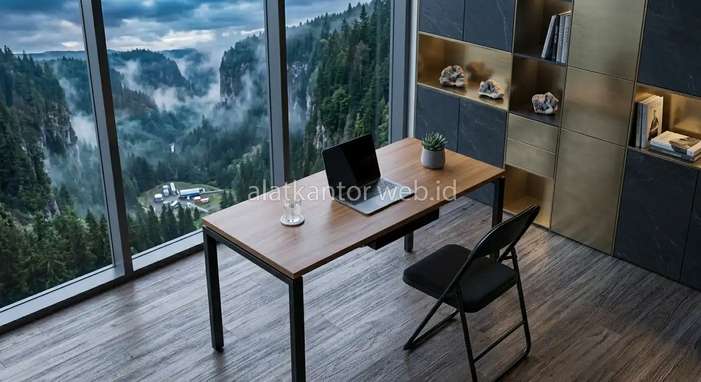
Meja Multifungsi
26 Agt 2026
Tips Memilih Meja Lipat Training untuk Ruang Rapat & Pelatihan
Kriteria memilih meja lipat training fliptop bermobilitas tinggi dengan roda kuncian fleksibel untuk ruang rapat dan aula.
Baca Selengkapnya
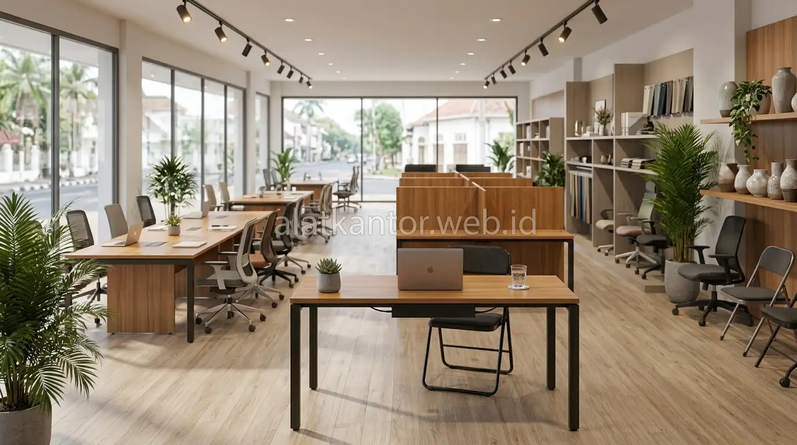
Lokasi B2B
26 Agt 2026
Toko Meja Kantor Terdekat di Malang Bebas Ongkir & SPJ Resmi
Distributor toko perabotan meja kantor terdekat di Malang Raya dengan gratis pengiriman, perakitan gratis, dan Faktur Pajak PPN 11%.
Baca Selengkapnya
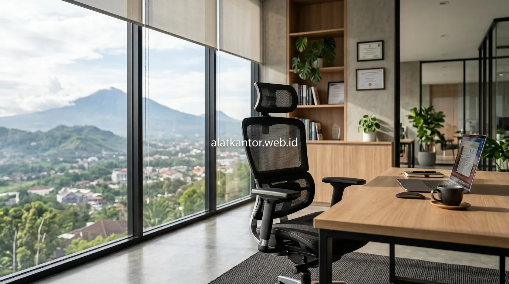
Ergonomi Kerja
24 Agt 2026
Panduan Pemilihan Kursi Kantor Ergonomis Malang Raya
Panduan lengkap memilih kursi kantor ergonomis bebas pegal untuk staf dan guru dengan penopang lumbar dan garansi hydrolik resmi.
Baca Selengkapnya
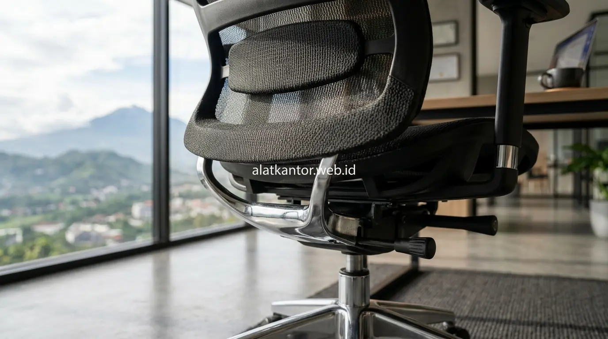
Material Kursi
24 Agt 2026
Tips Memilih Kursi Kerja Hydrolik Mesh untuk Staf dan Guru
Kriteria memilih material jaring nylon mesh adem, kepadatan busa dudukan, dan ketahanan tabung hydrolik Class 3.
Baca Selengkapnya
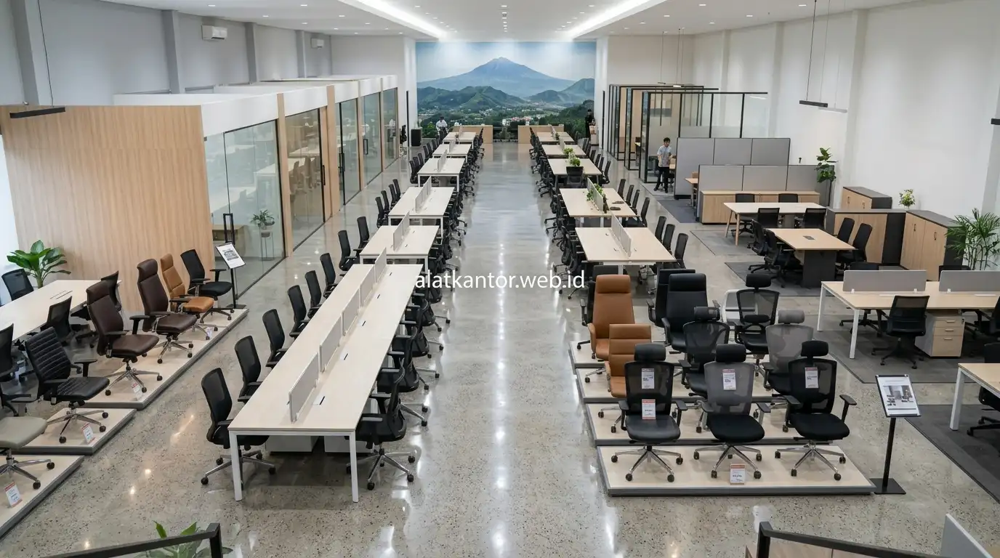
Lokasi B2B
24 Agt 2026
Toko Kursi Kantor Terdekat di Malang Bebas Ongkir & SPJ Resmi
Pusat toko perabotan supplier kursi kantor lokal di Malang dengan gratis ongkir, gratis perakitan, dan Faktur Pajak PPN 11%.
Baca Selengkapnya
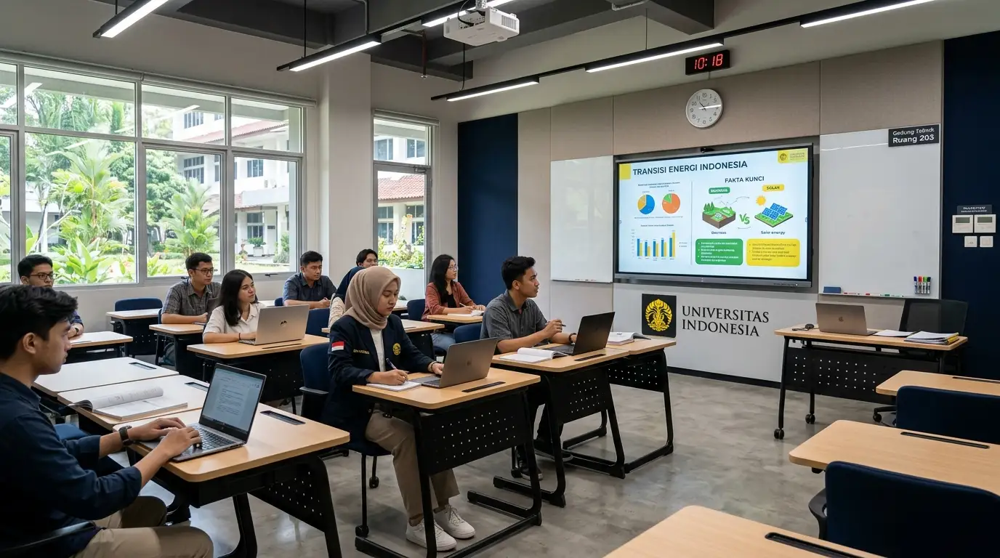
Smart Classroom
22 Agt 2026
Panduan Setup Kelas Interaktif & Smart Classroom Malang Raya
Langkah A-Z merancang kelas digital interaktif dengan integrasi Smart Board 4K, meja kursi ergonomis, dan kelengkapan SPJ BAST.
Baca Selengkapnya

Smart Tech
22 Agt 2026
Perbandingan Ukuran Whiteboard Digital 4K 65, 75, vs 86 Inch
Panduan praktis memilih ukuran layar Smart Board 4K interaktif yang paling efisien berdasarkan luas ruangan dan kapasitas audiens.
Baca Selengkapnya
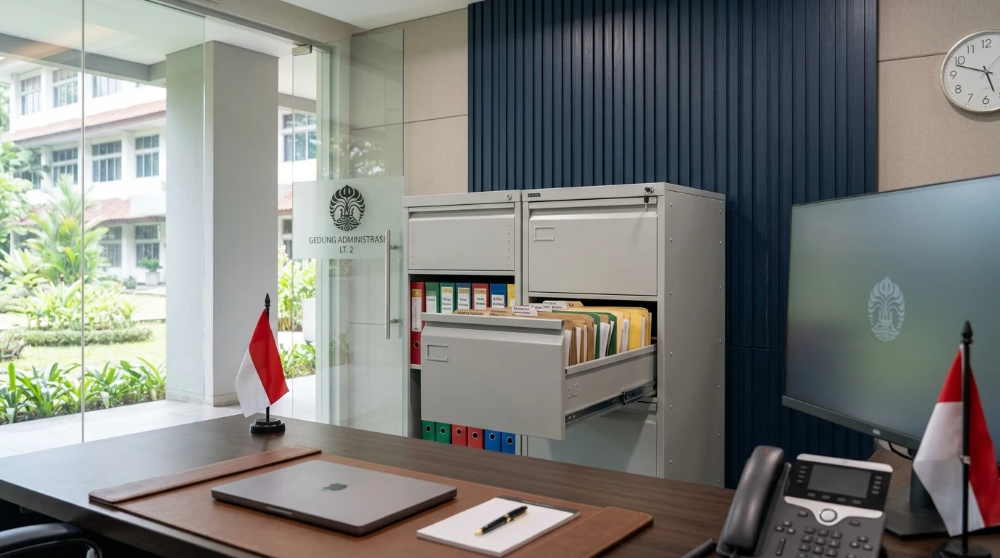
Kearsipan Besi
22 Agt 2026
Supplier Filling Cabinet 4 Laci Plat Besi Murah Berdokumen SPJ Resmi
Keunggulan lemari arsip besi tebal 0.8 mm dengan kuncian sentral central lock dan garansi rel roda bebas ongkir di Malang.
Baca Selengkapnya
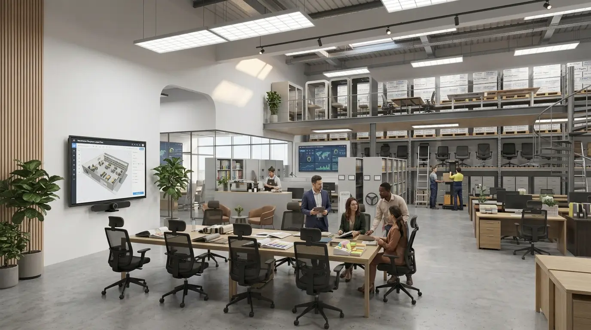
Panduan Utama
Panduan Lengkap Pengadaan Alat Tulis & Perlengkapan Sekolah / Perkantoran
Prosedur penyusunan RAB, penentuan kriteria barang resmi, serta kelengkapan dokumen SPJ dan Faktur Pajak PPN 11%.
Baca Selengkapnya
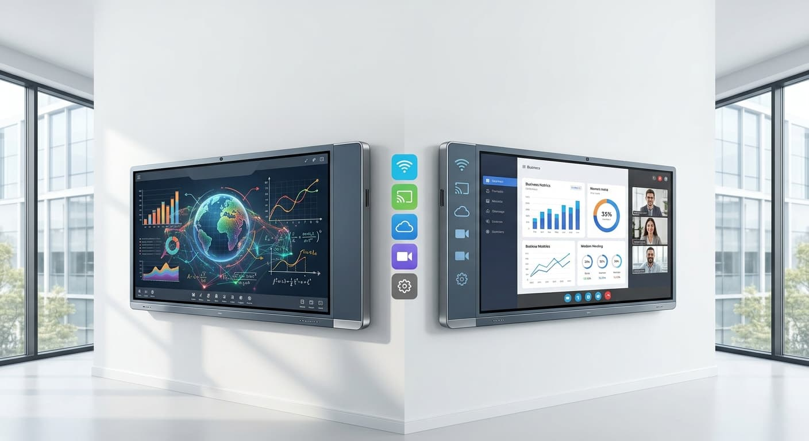
Smart Class
5 Manfaat Interactive Flat Panel (Smart Board) untuk Kelas Digital & Rapat
Alasan mengapa sekolah dan kantor modern beralih menggunakan layar sentuh 4K interaktif pengganti proyektor.
Baca Selengkapnya
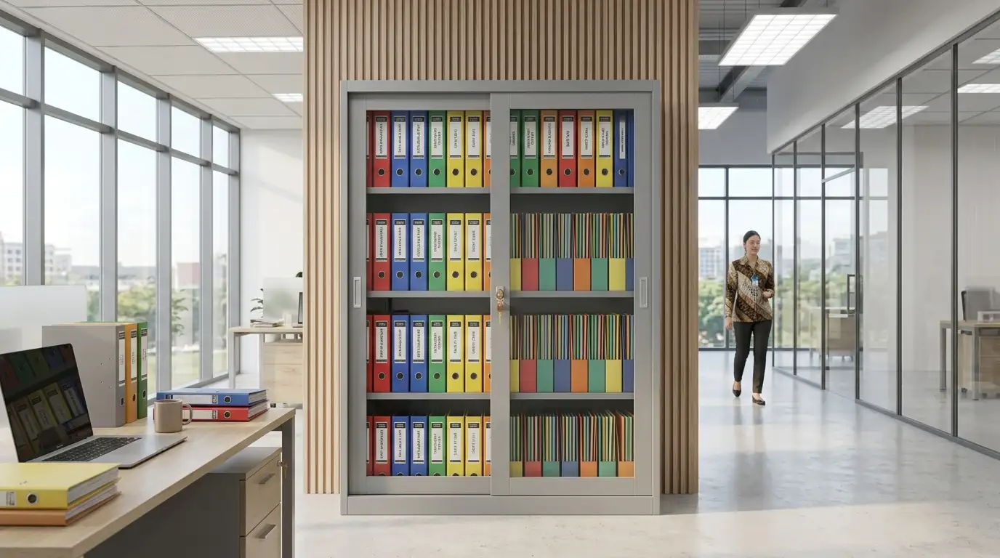
Kearsipan Besi
Keunggulan Lemari Arsip Besi Pintu Geser untuk Dokumen Sekolah & Kantor
Mengamankan dokumen penting, ijazah siswa, dan berkas kantor dari kelembapan, rayap, dan risiko kebocoran.
Baca Selengkapnya
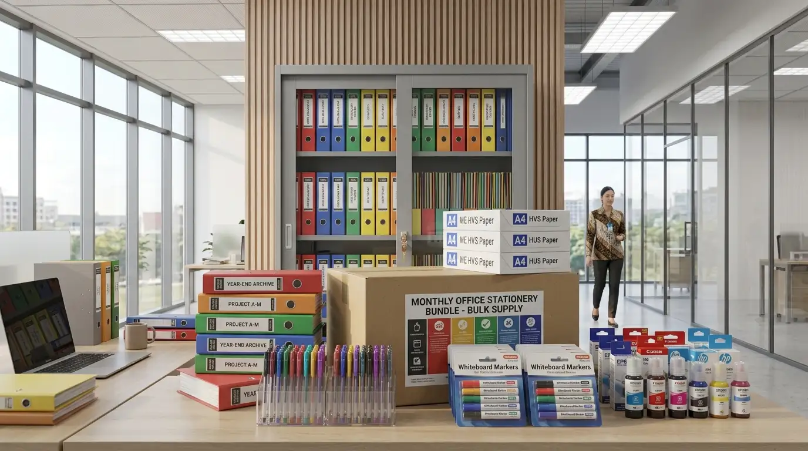
Manajemen ATK
Tips Hemat Mengatur Suplai Kertas & ATK Bulanan Sekolah Tanpa Pusing SPJ
Langkah efisien mengelola stok Kertas HVS per dus dan alat tulis kantor rutin dengan jaminan faktur pajak resmi.
Baca Selengkapnya
Teknologi Digital
Panduan Lengkap Transformasi Smart Classroom & Ruang Rapat Hybrid
Langkah modernisasi media presentasi sekolah, kampus, dan instansi menggunakan Smart Board & Videotron LED.
Baca Selengkapnya
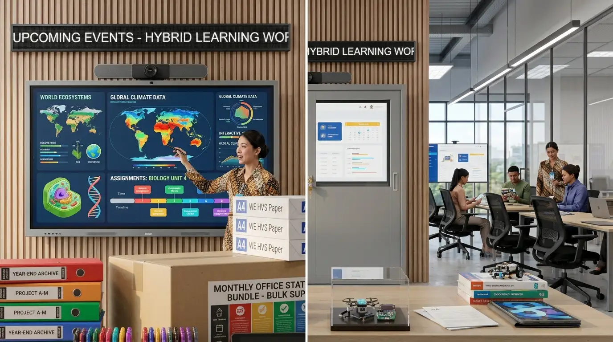
Komparasi
Perbandingan Smart Board Interaktif vs Proyektor Biasa untuk Sekolah
Analisis perbandingan Interactive Flat Panel (IFP) 4K vs proyektor dari segi biaya maintenance dan kenyamanan mengajar.
Baca Selengkapnya
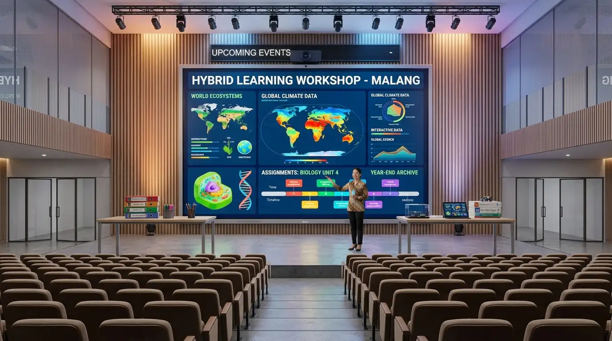
Videotron Display
Panduan Memilih Videotron LED untuk Aula Sekolah & Gedung Pertemuan
Tips menentukan spesifikasi Pixel Pitch (P1.8, P2.5, P3) dan refresh rate agar tampilan latar panggung terlihat megah.
Baca Selengkapnya
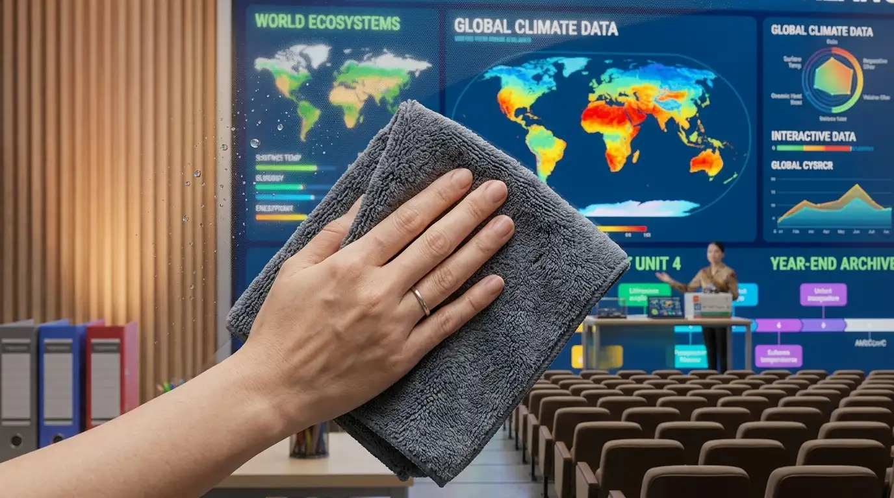
Perawatan Layar
5 Tips Merawat Layar Interactive Flat Panel (IFP) Agar Awet Bertahun-tahun
Cara merawat layar sentuh anti-glare Smart Board di sekolah dan kantor agar bebas goresan dan selalu responsif.
Baca Selengkapnya
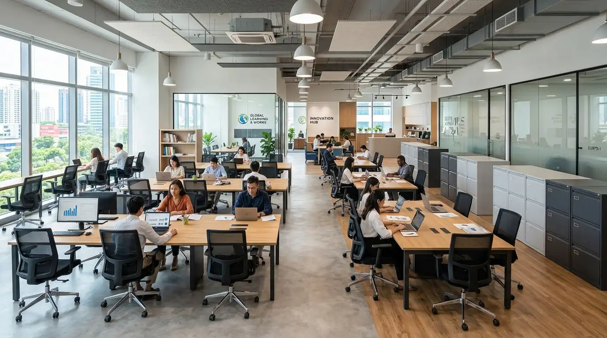
Furnitur Pilar
Panduan Lengkap Pemilihan Furnitur Sekolah & Perkantoran Tahan Lama
Tips memilih meja kerja HPL, kursi ergonomis hidrolik, dan lemari kearsipan besi tahan rayap untuk penggunaan jangka panjang.
Baca Selengkapnya
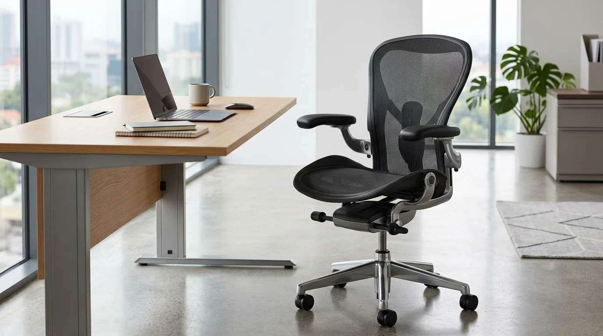
Kenyamanan Kerja
Tips Memilih Kursi Kerja Ergonomis Hidrolik untuk Guru & Staf Kantor
Cara memilih kursi putar dengan penopang pinggang (lumbar support) dan sandaran jaring mesh agar bebas pegal.
Baca Selengkapnya
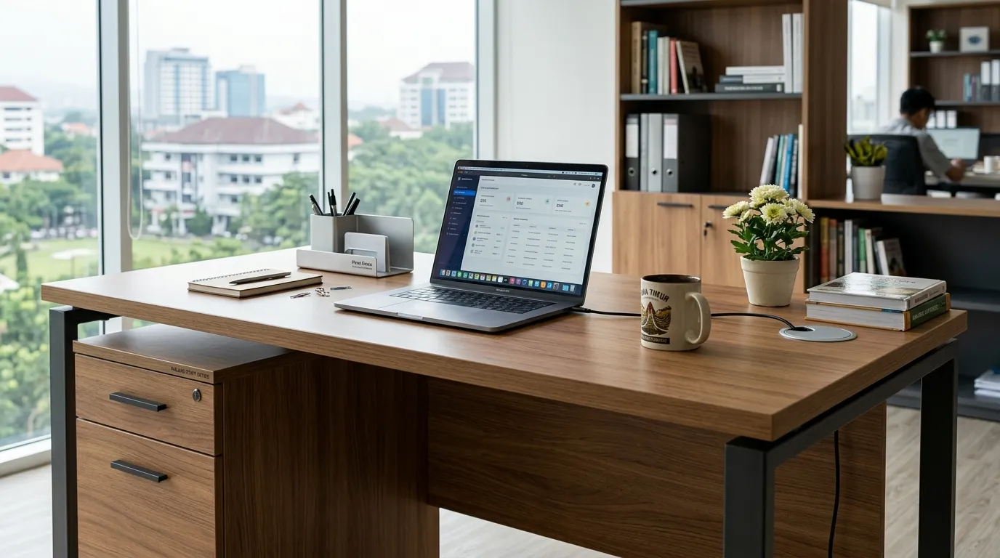
Material Furnitur
Keunggulan Meja Kerja Kayu Lapis HPL untuk Ruang Guru & Staf
Alasan mengapa lapisan High Pressure Laminate (HPL) menjadi standar meja kerja modern yang tahan air dan anti-gores.
Baca Selengkapnya
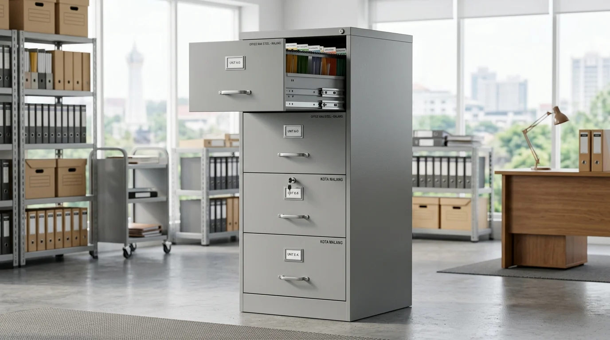
Keamanan Arsip
Manfaat Filling Cabinet Besi untuk Keamanan Arsip Sekolah & Kantor
Pentingnya lemari laci besi berkunci central lock untuk mengamankan berkas rahasia, dokumen siswa, dan laporan keuangan.
Baca Selengkapnya